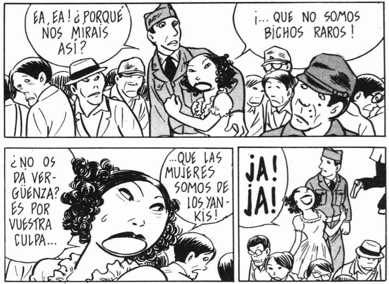
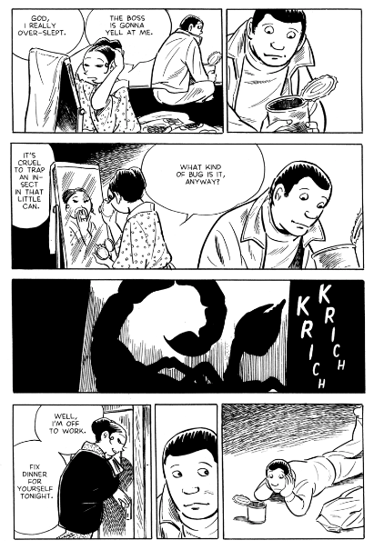

Yoshihiro Tatsumi y el Gekiga
Con una carrera que abarca desde la década de 1950 hasta nuestros días, Yoshihiro Tatsumi, recientemente fallecido en marzo del 2015 a los 79 años, fue un dibujante y mangaka a quien se le reconoce como el creador del término “gekiga”.

Fuente: The Asashi Shimbum
En su origen, el término era empleado para designar al estilo de cómic impulsado por Tatsumi, más rupestre y natural; y que, a diferencia de la corriente dominante del manga en ese momento, el cual estaba dirigido principalmente a niños, centraba sus esfuerzos en la creación de historias más maduras y dramáticas, influenciadas por la novela negra, aunque el término pronto sería adoptado por otros artistas que no querían que su trabajo fuera conocido como manga.
En palabras de Adrian Tomine, “En vez de historias épicas que siempre continúan, el trabajo de Tatsumi se compone de cuentos compactos, elípticos, que, como la mejor prosa de ficción moderna, es simultáneamente satisfactoria y abierta. En lugar de héroes y villanos unidimensionales, hay personas reales: rostros en una multitud, aparentemente seleccionados al azar y examinados en sus momentos más oscuros e íntimos”.
El trabajo de Tatsumi refleja muchas de las condiciones de un periodo de posguerra, por lo que en muchas de las historias podemos observar un retrato de una sociedad atormentada por la pérdida, humillada y que busca resignación. Historias sencillas y dolorosas, a veces brutales, pero compasivas: retratos honestos sobre personajes sufridos en situaciones complejas. La ira y la tristeza de personas comunes: la mujer que se convierte en prostituta de los soldados estadounidenses, situación que su padre aprovecha económicamente; el fotógrafo que se vuelve una celebridad por una imagen que capturó en Hiroshima después del bombardeo, misma que años después lo horrorizará cuando descubra la verdad sobre ésta; el obrero que intencionalmente pierde una mano en un accidente industrial para obtener dinero del seguro y dárselo a su ingrata esposa.

En años recientes, la compañía canadiense Drawn and Quarterly se ha propuesto publicar -por primera vez en inglés- un compendio anual de la obra de Tatsumi, enfocándose en lo más destacable de cada año de su trabajo, empezando con el material de 1969. Hasta la fecha, los compendios publicados son “The Push Man and Other Stories” (2005), “Abandon the Old In Tokyo” (2006), “Good-Bye” (2008), “A Drifting Life” (2009), “Black Blizzard” (2010) y “Fallen Words” (2013).

Lectura recomendada si realmente buscas cómics alternativos.
Este texto apareció primero en Comicgram.